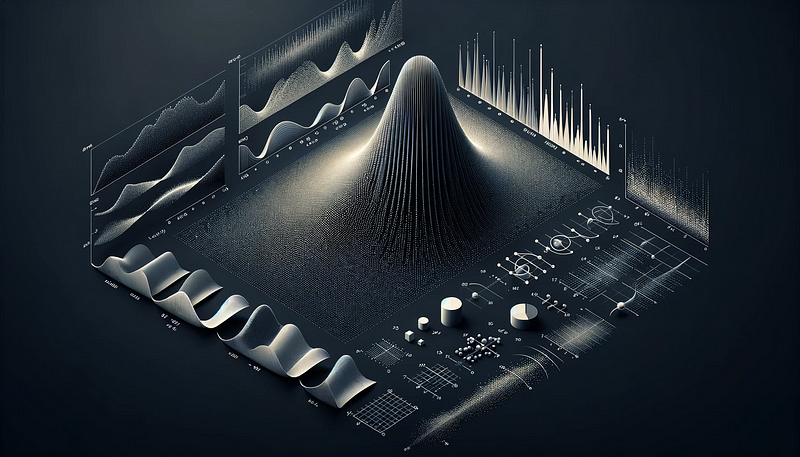

Probably More Than Chance: A Beginner’s Guide to Probability Distributions in R

Introduction
Welcome to “Probably More Than Chance: A Beginner’s Guide to Probability Distributions in R.” In this journey, we’ll explore the intriguing world of probability distributions, an essential concept in statistics and data analysis. These distributions are the backbone of understanding how data behaves under various conditions. R, a powerful tool for statistical computing, offers us an intuitive way to explore and visualize these distributions. Whether you’re a beginner or an enthusiast in the realm of data analysis, this guide will help you grasp the basics and see how R can bring statistical theories to life.
Now, let’s dive into the fascinating world of probability distributions, starting with understanding what they are and why they’re crucial in data analysis.
Understanding the Basics: What Are Probability Distributions?
At the heart of statistical analysis lies a fundamental question: “How likely is it?” This is where probability distributions come into play. Imagine probability distributions as a roadmap, guiding us through the landscape of potential outcomes in a random event. They tell us not just what could happen, but how likely each outcome is.
In a simple analogy, think of a probability distribution as a recipe book for a grand feast of data. Each recipe (distribution) has its unique ingredients (parameters) and preparation methods (formulas), leading to a variety of delightful dishes (outcomes). Whether it’s the bell curve of a normal distribution or the discrete bars of a binomial outcome, each distribution serves up insights into the nature of our data.
Now, with our foundational understanding set, let’s step into the world of specific distributions, starting with the classic: the Normal distribution.
The Normal Distribution: The Bell Curve in R
The Normal distribution, frequently encountered in real-world scenarios like IQ scores or heights in a population, exemplifies a symmetric bell-shaped curve. It symbolizes situations where most observations cluster around a central mean, with fewer occurrences as we move away from the center.
Here’s how you can generate and visualize a Normal distribution in R:
# Generating a normal distribution in R
normal_data <- rnorm(1000, mean = 50, sd = 10)
hist(normal_data, main = "Normal Distribution", xlab = "Values", breaks = 30, col = "blue")
In this snippet rnorm() is the function for generating normally distributed random numbers:
- The first argument, 1000, indicates the number of observations to generate.
mean = 50sets the average value around which data points are centered.sd = 10specifies the standard deviation, reflecting how spread out the values are around the mean.
Running this code in R produces a histogram that visually represents the Normal distribution, showing the characteristic bell curve.
The Poisson Distribution: Predicting Rare Events
The Poisson distribution is your statistical crystal ball for predicting the frequency of rare events. It’s like observing shooting stars on a dark night; you know they’re scarce, but you want to predict their occurrence. Commonly, it’s used for counting events like the number of emails you receive in a day or cars passing through an intersection.
In R, simulating a Poisson distribution is straightforward:
# Generating a Poisson distribution in R
poisson_data <- rpois(1000, lambda = 3)
hist(poisson_data, main = "Poisson Distribution", xlab = "Occurrences", breaks = 20, col = "green")
The key function here is rpois(), which generates random numbers following a Poisson distribution:
- The first argument, 1000, is the number of random values we want to generate.
lambda = 3represents the average rate of occurrence (λ).
In this example, it’s as if we expect, on average, 3 events (like emails or cars) in a given time frame.
By running this code, you create a histogram that illustrates how often different counts of an event occur, showcasing the unique characteristics of the Poisson distribution.
The Uniform Distribution: Equal Probability Events
Imagine you’re picking a card at random from a well-shuffled deck. Each card has an equal chance of being selected — this scenario exemplifies the Uniform distribution. It’s the go-to model when every outcome has the same likelihood, whether it’s rolling a fair dice or selecting a random number between 0 and 1.
In R, creating a Uniform distribution is as simple as:
# Generating a Uniform distribution in R
uniform_data <- runif(1000, min = 0, max = 1)
hist(uniform_data, main = "Uniform Distribution", xlab = "Values", breaks = 25, col = "red")
Let’s break down the function runif() generating uniformly distributed numbers:
- 1000 specifies the quantity of random numbers to generate.
min = 0andmax = 1set the lower and upper limits between which the numbers will be uniformly distributed.
This code creates a histogram showing a flat, even distribution of values, which is the hallmark of the Uniform distribution in its purest form.
The Exponential Distribution: Time Between Events
The Exponential distribution is akin to timing the unpredictable yet inevitable — like waiting for a meteor to shoot across the sky. It’s primarily used to model the time elapsed between events, such as the lifespan of a machine part or the interval between bus arrivals.
Simulating an Exponential distribution in R is quite straightforward:
# Generating an Exponential distribution in R
exponential_data <- rexp(1000, rate = 0.2)
hist(exponential_data, main = "Exponential Distribution", xlab = "Time", breaks = 30, col = "purple")
In this snippet, rexp() is the function at play. It generates random numbers following an Exponential distribution:
- The first argument, 1000, is the number of random values to generate.
rate = 0.2sets the rate parameter, which is the inverse of the mean. In this case, it implies an average waiting time of 5 units (since 1/0.2 = 5).
Running this code in R produces a histogram that visualizes the Exponential distribution, showcasing how the frequency of occurrences decreases as time increases.
The Binomial Distribution: Success or Failure Outcomes
The Binomial distribution is the statistical equivalent of a coin flip experiment, but with more coins and more flips. It’s perfect for scenarios with two possible outcomes: success or failure, win or lose, yes or no. For instance, it can be used to predict the number of heads in 100 coin tosses or the likelihood of a certain number of successes in a series of yes/no experiments.
Generating a Binomial distribution in R is quite intuitive:
# Generating a Binomial distribution in R
binomial_data <- rbinom(1000, size = 10, prob = 0.5)
hist(binomial_data, main = "Binomial Distribution", xlab = "Number of Successes", breaks = 10, col = "orange")
Here’s a look at the function and its arguments. rbinom() is the function for generating binomially distributed numbers:
- 1000 is the number of experiments or trials to simulate.
size = 10specifies the number of trials in each experiment (like flipping a coin 10 times per experiment)prob = 0.5sets the probability of success on each trial (similar to a fair coin having a 50% chance of landing heads).
This code snippet creates a histogram that illustrates the distribution of successes across multiple experiments, providing a visual representation of the Binomial distribution.
Practical Applications: Using Distributions in Real-World Data Analysis
The power of probability distributions extends far beyond academic exercises; they are vital tools in making informed decisions from real-world data. For instance, an environmental scientist might use the Exponential distribution to model the time until the next significant weather event, or a retail analyst might employ the Normal distribution to understand customer spending behaviors.
Let’s explore a more complex example using R, involving customer purchase behavior:
# Example: Analyzing Customer Purchase Behavior
set.seed(123) # For reproducibility
purchase_times <- rexp(200, rate = 1/45)
purchase_amounts <- rnorm(200, mean = 200, sd = 50)
plot(purchase_times, purchase_amounts, main = "Customer Purchase Behavior", xlab = "Time Between Purchases (days)", ylab = "Purchase Amount ($)", pch = 19, col = "brown")
In this scenario we simulate the time between purchases (purchase_times) using rexp(), assuming an average of 45 days between purchases. This reflects the Exponential distribution’s ability to model waiting times. purchase_amounts represents the amount spent on each purchase, modeled with rnorm() to reflect a Normal distribution with an average purchase of $200 and a standard deviation of $50. The plot() function creates a scatter plot, allowing us to visualize the relationship between the time intervals and purchase amounts. This example offers a glimpse into how real-world phenomena, like customer behavior, can be modeled and analyzed using different probability distributions in R. The insights drawn from such analysis can significantly influence business strategies and decision-making.
Conclusion
Our exploration of probability distributions in R, “Probably More Than Chance: A Beginner’s Guide to Probability Distributions in R,” has taken us through a variety of statistical landscapes. From the ubiquitous bell curve of the Normal distribution to the event-counting Poisson, each distribution offers unique insights into data.
We’ve seen how these distributions are not just theoretical abstractions but are deeply embedded in the fabric of everyday data analysis. By using R, we’ve brought these concepts to life, offering both visual and quantitative understanding. Whether it’s predicting customer behavior or analyzing environmental patterns, these tools empower us to make data-driven decisions with greater confidence.
As you continue your journey in data analysis with R, remember that each dataset tells a story, and probability distributions are key to unlocking their meanings. Embrace the power of R and these statistical techniques to uncover the hidden narratives in your data.
But our journey doesn’t end here. Stay tuned for our next article, where we’ll dive into the world of hypothesis testing. We’ll unravel how to make definitive statements about your data, moving from probability to certainty. From setting up hypotheses to interpreting p-values, we’ll demystify the process, making it accessible for beginners and a refresher for seasoned practitioners. Get ready to test your assumptions and validate your theories with R in our upcoming guide!